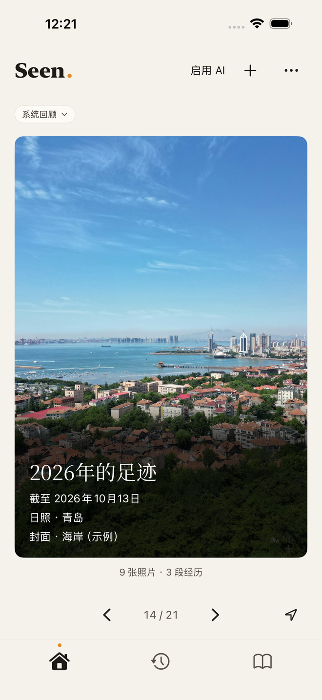
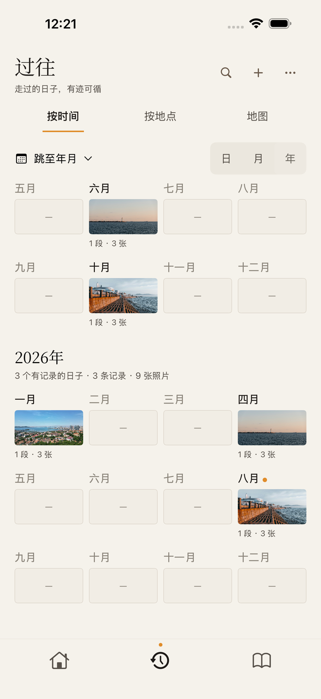
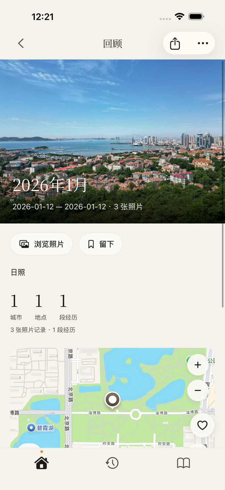
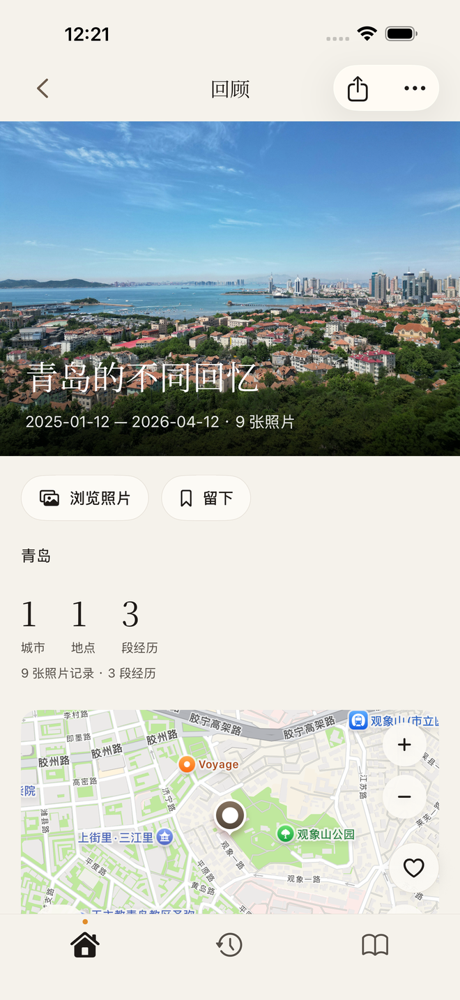

Seen 2.0 · 为 iPhone 而设计
从照片，
回到经历。
选择想加入的照片，按时间与地点浏览，在月度、年度和同地回顾中重新翻看生活。把喜欢的内容留下，成为自己的所见。
在 App Store 下载已在 App Store 上线 · 当前版本与价格以商店页面为准 · iOS 26.5 起

时间 · 地点
找到想回看的那一天。
按日、月、年浏览，也可以输入日期、城市或地点查找照片。
月度 · 年度 · 城市
不止一年一次的回顾。
同一个地方的不同日子、每个月的片刻、城市里的回忆，以及跨年的目的地记录。
留下 · 编辑 · 分享
留下自己的所见。
保存喜欢的回顾，在作品内调整文字与照片，再分享带有时间和地点的封面。



使用许可照片与示例记录；日期和地点为展示资料。
本地优先 · 可选 AI
你的记录，
由你掌握。
基础整理与回顾无需 AI。可选 AI 仅接入 DeepSeek，由你自行配置 API Key。照片理解单独确认选片范围与费用后发送净化的压缩静态图；文字关系分析发送已加入经历的目录和本次取证范围的时间、地点及已有线索，独立润色只发送你明确选定的原文。适用 DeepSeek 的费用与隐私规则。核心记录和作品保存在本机，支持本地备份与恢复。
了解资料如何处理 ↗